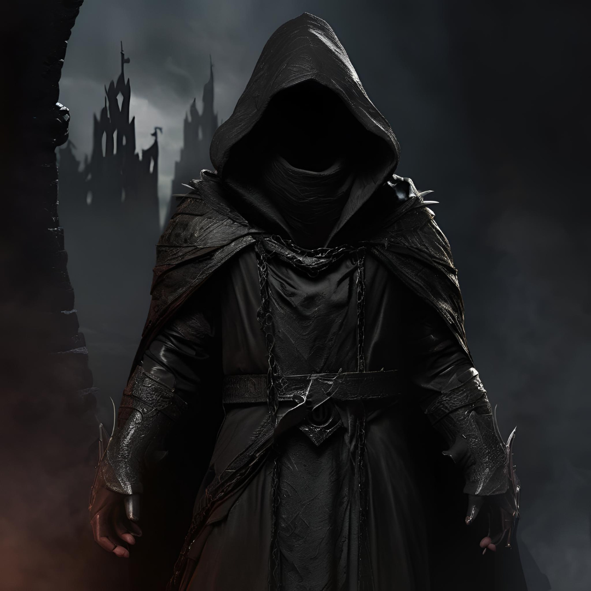
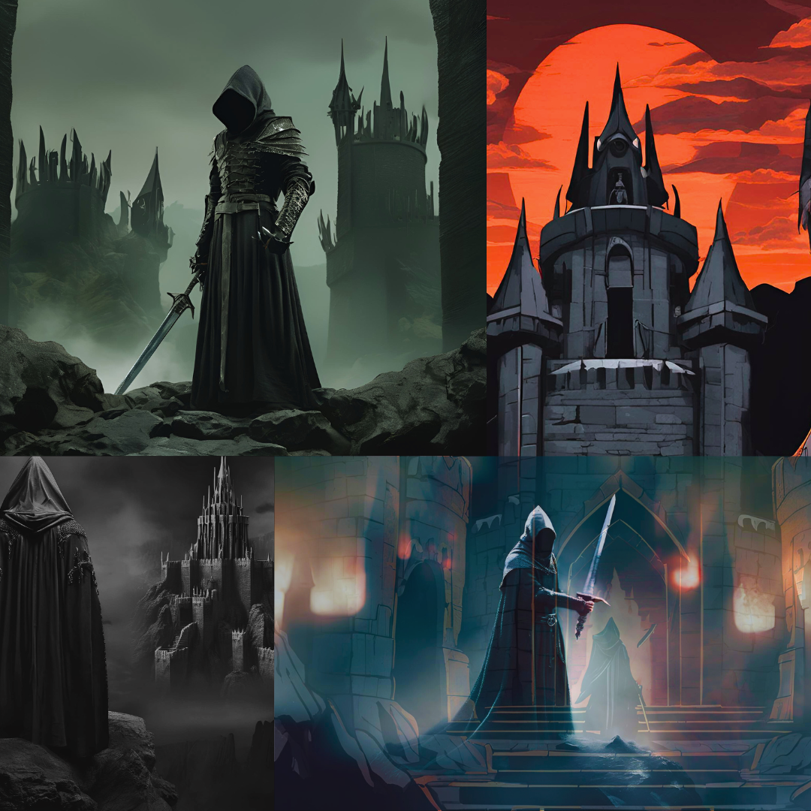

Introduction to Khamûl
Khamûl, known as the Shadow of the East, was the second most powerful of the Nazgûl, surpassed only by the Witch-king of Angmar. Originally an Easterling chieftain, Khamûl’s desire for power and influence led him to accept one of the Nine Rings from Sauron. Under the Ring’s corrupting influence, he fell into darkness, eventually becoming one of Sauron’s most loyal servants, known for his relentless obedience and ruthless pursuit of Sauron’s enemies.
Khamûl’s Role Among the Nazgûl
As the second-in-command, Khamûl was given considerable responsibilities by Sauron. He ruled over Dol Guldur in Mirkwood, where he kept watch over the surrounding lands and hunted for the One Ring. His powerful, terror-inducing presence made him one of the most feared of the Nine, though he was particularly vulnerable to sunlight, which weakened his abilities. His command over Dol Guldur helped solidify Sauron’s influence in the northern lands and spread fear among the free peoples.
Powers and Abilities
Like all Ringwraiths, Khamûl possessed enhanced senses, particularly the ability to detect the presence of the One Ring. However, he was also distinctively weaker in daylight, limiting his strength and effectiveness during the daytime. His leadership at Dol Guldur exemplified his cunning and cruelty, commanding an army of orcs and other dark creatures to maintain Sauron’s presence in the North.
The Ringwraiths: A Collective Legacy of Terror
Khamûl and his fellow Nazgûl embodied the corruption of power and the downfall of great leaders who succumbed to Sauron’s influence. Each Ringwraith was once a king or chieftain, gifted with one of the Nine Rings. Over time, they lost their identities, becoming wraiths bound entirely to Sauron’s will. Though they were fearsome in battle and nearly invincible, their loyalty came at the cost of their humanity, transforming them into shadows of their former selves.
The Hunt for the One Ring
Khamûl was among the Ringwraiths sent by Sauron to track down the One Ring, and he relentlessly pursued Frodo in the Shire and beyond. His close brush with Frodo in the Shire demonstrated his intense sensitivity to the Ring’s presence, making him a significant threat throughout Frodo’s journey. The Ringwraiths’ single-minded pursuit of the Ring showcased their utter devotion to Sauron, acting as his primary agents in the War of the Ring.
Legacy and Influence
Though ultimately defeated alongside the Witch-king, Khamûl’s legacy endures as a reminder of the power of corruption and the devastating effect of Sauron’s influence on once-great leaders. His story, along with that of the other Nazgûl, symbolizes the enduring danger of ambition unchecked by wisdom or morality. Their transformation into wraiths reflects the tragedy of individuals who forsake their humanity for power, and the haunting legacy of their actions continues to echo through Middle-earth.
Powers and Legacy
Though weaker in daylight, Khamûl’s leadership and terror-inducing presence made him a feared figure in Middle-earth. His story serves as a grim testament to the corrupting power of ambition.
